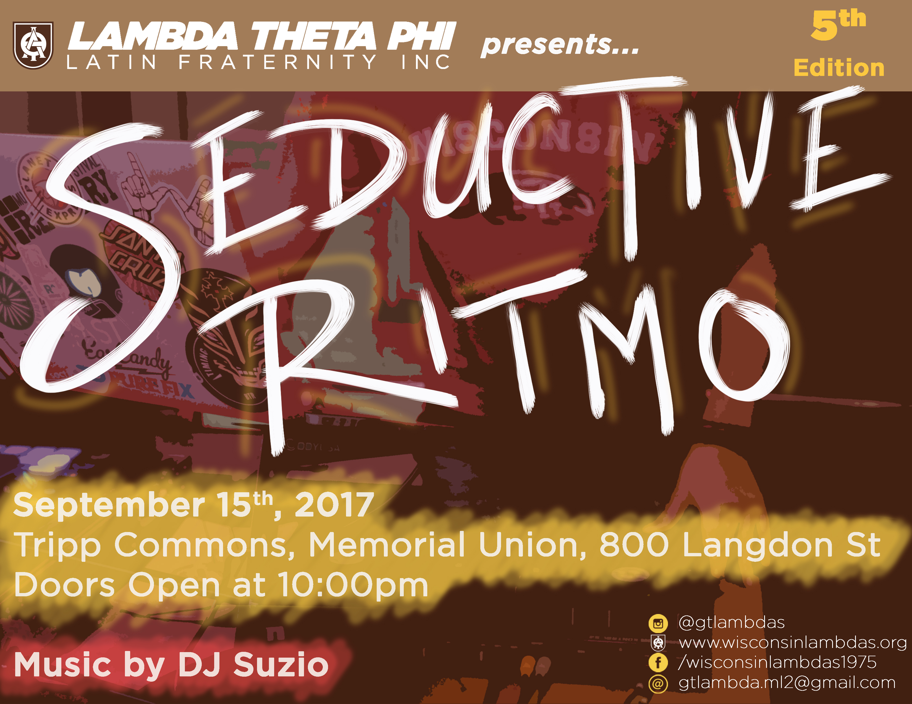
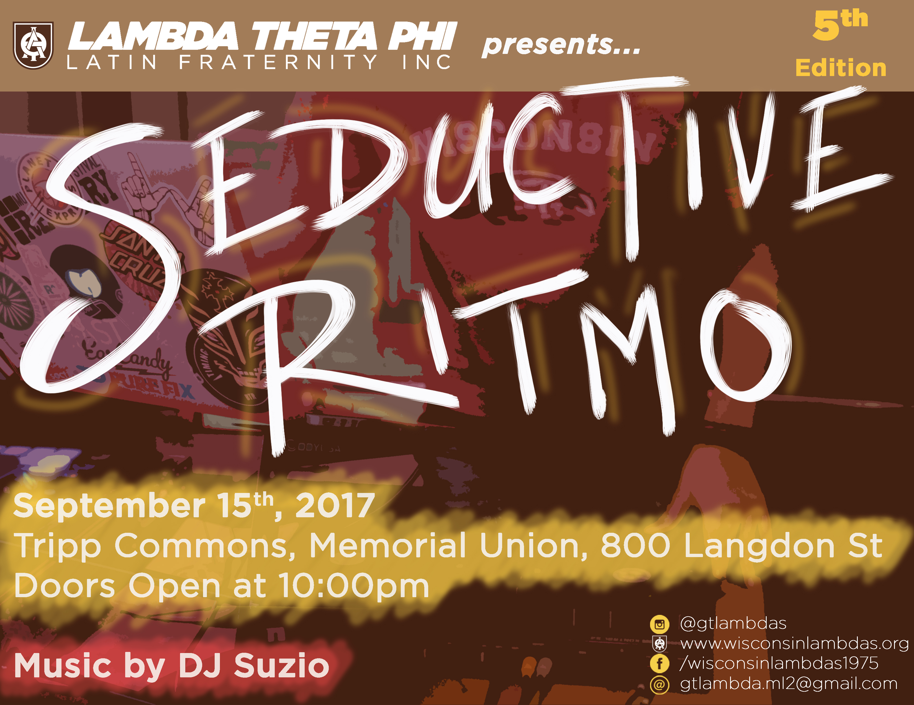

Overview
Throughout my undergraduate career, I worked as a Graphic Designer/Web Developer for Lambda Theta Phi Latin Fraternity Inc. I was asked to create a logo for the established chapter at the University of Wisconsin-Madison and it is currently being used on all digital platforms. Aside from the logo design, I have also worked on several graphic design projects and outreach campaigns. Working with the closely with the members of the organization helped me create content that would successfuly brand the chapter. I followed their National Branding Guide to ensure all designs were not violating their guidelines.
Graphic Design
The current logo for the organization was created to brand the chapter. It encapsulates the chapter in a simple manner. Including the organization's official colors along with an outline of the state encrusted with ice due to the chapter's alias, "The Arctic Asylum."
Following the university's guidlines, I was able to edit and use an image of Bucky the Badger along with the organization's name to create a facebook banner for a private group. Since the image is not being used to generate revenue, it is fair use of copyrighted content.
The shirts were designed to be sold and distributed to members all over the country. The money raised was used to fund events for the chapter at the University of Wisconsin. Shown in both designs are characteristics of the organization such as their official flower, the white carnation, and their nickname "Lambdas." The colors were restricted to only brown and white as stated by their paraphernelia guidelines. The designs were met with great enthusiasm.
Digital Outreach
 

These fliers are examples of the type of outreach that was promoted on social media outlets. The approach taken was successful, as it included posting on Facebook, Instagram, and Twitter every three days for two weeks before the event. This allowed the audience to not feel overwhelmed by the content while still having a presence in their minds, if the events interested them.
Conclusion
Working with Lambda Theta Phi opened up many doors because members from all over the nation enjoyed my content. I obtained a number of small side projects for established chapters in other universities that provided me with practice and more experience communicating and delivering to a customer. Today, I still work with the organization on certain occassions if my skills are needed for promotional or creative tasks.